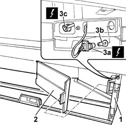

5540A50 TAIL-LIGHT BULB (ONE), LH OR RH - REPLACE
- Path
- Procedures > 55 ELECTRICAL EQUIPMENT > 5540 EXTERIOR LIGHTING > 5540A LIGHTING > 5540A50 TAIL-LIGHT BULB (ONE), LH OR RH - REPLACE
- Kind
- repair procedure (removal / refitting; the operation number is the code)
- Applies to
- all engines; all production periods
- Interactive page
- https://sloeber94.github.io/elrnDB-aGt/en/#/125001649
Applies to: all engines; all production periods
 Removing
Removing
 Refitting
RefittingOpen the rear tailgate.
1. Open the flap for the compartment in the luggage compartment.
2. Remove the bulb access flap.
3. Rotate the bulb holder (3a) and extract the (bayonet fitting) bulb (3b); proceed in the same to to replace the bulb for the rear direction indicators (3c) (press-fit all glass bulb).

Applies to: all engines; all production periods
Refitting
RemovingCheck the operation of the bulb.
Refit the bulb in the bulb holder (bayonet fitting).
Refit the bulb holder, rotating it in an anti-clockwise direction.
Reposition the bulb access flap.
Close the flap for the compartment in the luggage compartment.
Close the tailgate.
Check the operation of the rear light cluster.
Topics that link to this page (8)
- I01 SIDE LIGHTS/NO. PLATE LIGHTS NOT WORKING
- I02 PARKING LIGHTS NOT WORKING
- I08 SIDE LIGHTS NOT WORKING
- I10 DIRECTION INDICATORS / HAZARD WARNING LIGHTS / NOT WORKING
- I14 BRAKE LIGHTS AND THIRD BRAKE LIGHT NOT WORKING
- I39 TURN SIGNALS DO NOT WORK WHEN HAZARD KEY IS PRESSED
- 5550C26 L/H OR R/H SIDE TURN SIGNAL BULB - R+R
- 5550D14 L/H OR R/H BRAKE LIGHT BULB - R+R